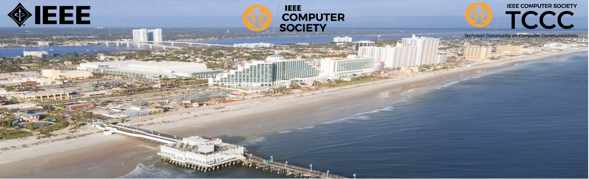
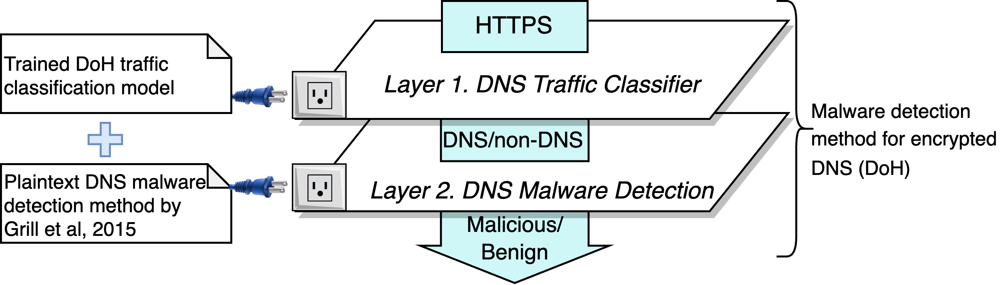
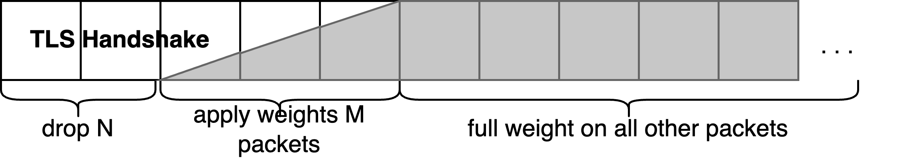
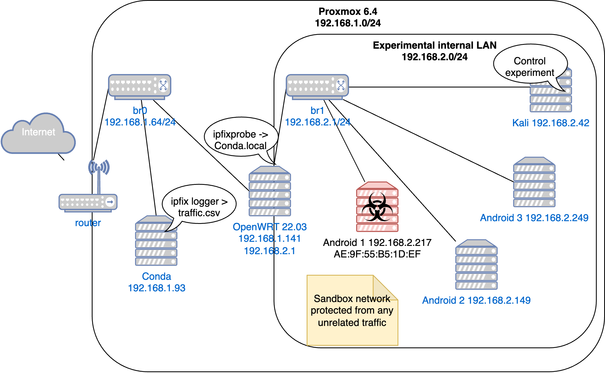
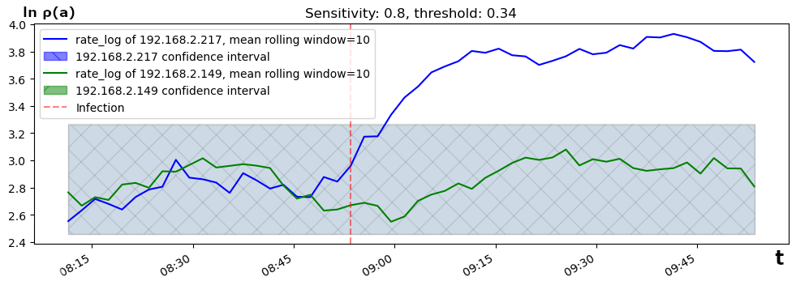

RADER Roman, JEŘÁBEK Kamil and RYŠAVÝ Ondřej. Detecting DoH-Based Data Exfiltration: FluBot Malware Case Study. In: IEEE 48th Conference on Local Computer Networks (LCN). Daytona Beach: IEEE Computer Society, 2023, pp. 50-54. ISBN 979-8-3503-0074-1.
Участь у 48-й конференції IEEE з локальних комп’ютерних мереж (LCN)

Наша наукова стаття щодо виявлення витоку (ексфільтрації) даних через протокол DoH була опублікована на 48-й конференції IEEE з локальних комп’ютерних мереж (LCN), що проходила з 1 по 5 жовтня 2023 року в Дейтона-Біч, Флорида, США. Автори статті: Роман Радер, Каміл Єржабек, Ондржей Ришавий.
Вступ
У статті описано практичне дослідження (case study) виявлення FluBot — банківського трояна для Android, активного у 2021–2022 роках. Попередні дослідження з виявлення шкідливого трафіку в DoH здебільшого фокусувалися на навчанні класифікаторів машинного навчання безпосередньо для виявлення шкідливих потоків усередині DoH. Наша робота пропонує двошаровий метод виявлення.
Двошарове виявлення шкідливого ПЗ у DoH
Цей підхід дозволяє використовувати один і той самий алгоритм виявлення шкідливого ПЗ для різних протоколів шифрованого DNS (наприклад, DNS-over-TLS, DoQ) шляхом підключення різних класифікаторів на першому рівні.
Крім того, це дає змогу застосовувати алгоритми аналізу, спочатку розроблені для відкритого (plaintext) DNS, до трафіку DoH шляхом підключення алгоритмів виявлення на другому рівні.

Застосування алгоритму виявлення шкідливого ПЗ відкритого DNS до шифрованого DNS за допомогою класифікаційної моделі DoH.Деталі алгоритму
- Рівень 1: Модель для виявлення DNS-over-HTTPS тренувалася на великому датасеті DoH-трафіку [1]. Рівень 1 дозволяє нам застосовувати раніше створені алгоритми аналізу незашифрованого DNS до шифрованого трафіку DoH.
- Рівень 2: Ми використали модифікований метод із [2], який обчислює співвідношення DNS-запитів до кількості унікальних IP-адрес для кожного вузла в локальній мережі для виявлення аномальної активності: $\ln~\rho(a)~=~\ln {\frac{\delta(a)}{\pi(a) + 1}}$. Тут $\delta(a)$ — кількість DNS-запитів, згенерованих вузлом $a$, $\pi(a)$ — кількість унікальних IP-адрес, до яких звертався вузол $a$. Двошаровий підхід також дозволяє підключати будь-які інші методи виявлення загроз у відкритому DNS.
Оптимізація детекції DoH
- Модель Random Forest показала найкращі результати порівняно з Histogram-based Gradient Boosting та Logistic Regression. Ознаки (features): стандартне відхилення, середнє значення та дисперсія розмірів пакетів і часових інтервалів між ними (інтервали згруповано за вхідними, вихідними та комбінованими пакетами).
- Для підвищення точності класифікації DoH-потоків ми зменшили вплив початкових пакетів рукостискання TLS (handshake), які часто відображають параметри розгортання сервера, а не реальний трафік. Як показано на схемі, ми застосували вагові коефіцієнти до перших кількох пакетів залежно від їхньої позиції у послідовності handshake, щоб урахувати різну довжину TLS handshake та не втратити важливу інформацію.

Зменшення впливу TLS Handshake шляхом присвоєння меншої ваги першим N, M <= 6 пакетам.Експериментальний стенд
Ми створили тестову пісочницю з трьох емуляторів Android x86 та одного інстансу Linux. Ці машини були з’єднані через маршрутизатор OpenWRT з утилітою ipfixprobe для збору потоків IPFIX на межі мережі.

Мережа-пісочниця для збору трафіку шкідливого ПЗ FluBot та легітимного трафіку інших Android-пристроїв.Результати двох експериментів
- В Експерименті 1 (Ізольована лабораторія) одна віртуальна машина Android була інфікована шкідливим ПЗ, тоді як дві інші залишалися чистими. Чисті машини за скриптом відвідували звичайні вебсайти. Значення $\ln \rho(a)$ розраховувалося для всіх машин для валідації алгоритму.
- В Експерименті 2 (Реалістичний сценарій) ми інфікували віртуальну машину Android та одночасно запустили скрипт генерації нормального трафіку вебсерфінгу, щоб перевірити здатність методу виявляти заражений вузол на фоні повсякденної активності користувача. Ми застосували аналіз викидів на базі ARIMA з довірчими інтервалами типової поведінки (див. рисунок).

Момент зараження Android вірусом FluBot. Значення $\ln \rho(a)$ перевищує довірчий інтервал після зараження -> індикатор компрометації (IoC).Висновки
Ми запропонували двошаровий метод класифікації для виявлення шкідливого ПЗ FluBot, яке експлуатує приховані канали DoH. Подальші дослідження будуть спрямовані на підвищення точності виявлення та розширення моделі на інші протоколи прихованих каналів DNS, такі як DoH, DoT і DoQ.
- Експериментальні jupyter ноутбуки
- DOI 10.1109/LCN58197.2023.10223341
- Посилання для цитування:
@INPROCEEDINGS{10223341,
author={Rader, Roman and Jerabek, Kamil and Rysavy, Ondrej},
booktitle={2023 IEEE 48th Conference on Local Computer Networks (LCN)},
title={Detecting DoH-Based Data Exfiltration: FluBot Malware Case Study},
year={2023},
volume={},
number={},
pages={1-4},
doi={10.1109/LCN58197.2023.10223341},
ISSN={2832-1421},
month={Oct},}
Література:
- [1] K. Jeřábek, K. Hynek, T. Čejka, and O. Ryšavỳ, “Collection of datasets with dns over https traffic,” Data in Brief, vol. 42, p. 108310, 2022.
- [2] M. Grill, I. Nikolaev, V. Valeros, and M. Rehak, “Detecting dga malware using netflow,” in 2015 IFIP/IEEE International Symposium on Integrated Network Management (IM), pp. 1304–1309, IEEE, 2015.
- [3] H. Salsabila, S. Mardhiyah, and R. B. Hadiprakoso, “Flubot malware hybrid analysis on android operating system,” in 2022 International Conference on Informatics, Multimedia, Cyber and Information System (ICIMCIS), pp. 202–206, IEEE, 2022.
Робота підтримана Технологічним агентством Чеської Республіки в межах проєкту FW03010099: «Контекстний аналіз зашифрованого трафіку на основі даних потоків».